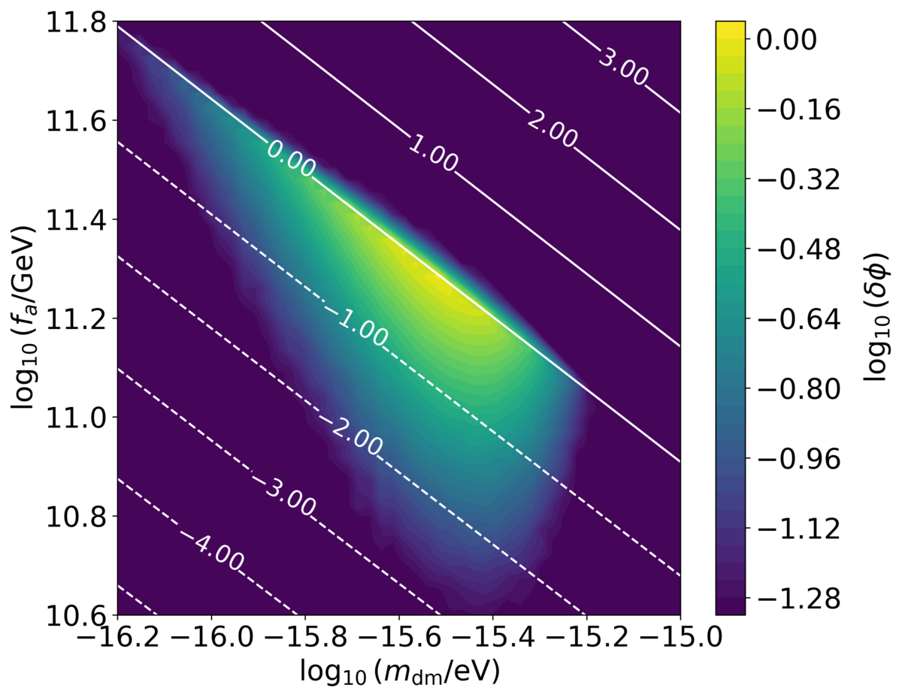
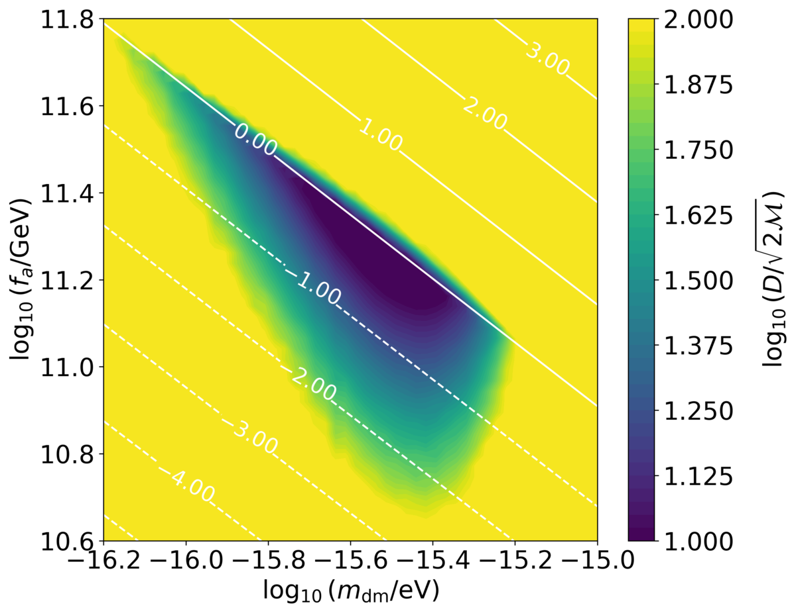
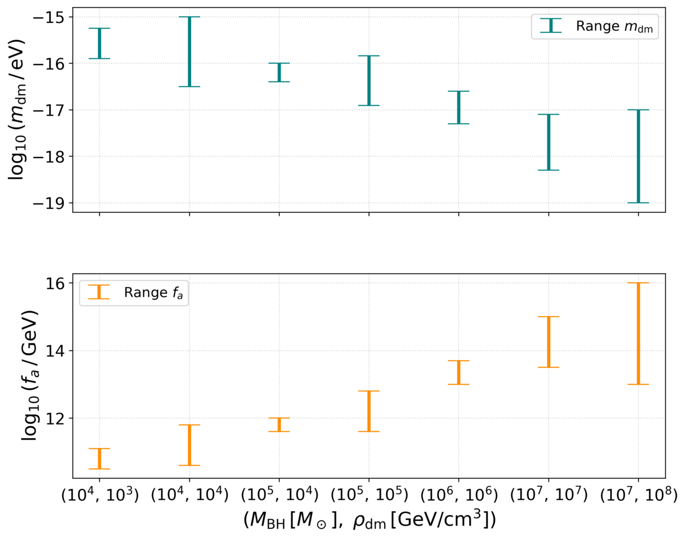
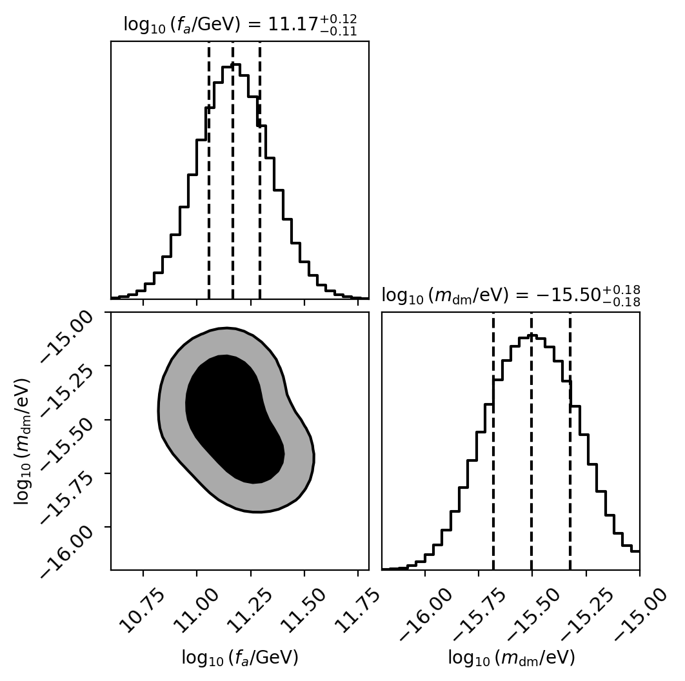

Paper overview
Ultralight bosons with self-interactions, such as axion-like particles, can be captured around a massive black hole and build up a dense cloud known as a gravitational atom. This work follows a dynamical formation mechanism for these clouds, driven by the self-interactions themselves, and asks whether a small black hole spiralling through the cloud would leave an imprint that LISA can detect. The answer is yes, and the imprint can be used to measure the mass and self-coupling of the particle through gravity alone.
Axion-like particles (ALPs) are a generic prediction of many extensions of the Standard Model and of string compactifications, and are a well-motivated dark-matter candidate. If the ALP mass arises from weakly coupled instantons, the field has a periodic potential that, once expanded, contains a quartic self-interaction,
Here $m_{\rm dm}$ is the particle mass and $f_a$ the decay constant, which sets the strength of the self-interactions. No coupling to Standard Model fields is assumed: the boson interacts only through gravity and its own potential.
In the non-relativistic limit and in the potential of a black hole of mass $M_{\rm BH}$, the field obeys a Gross–Pitaevskii equation with a $1/r$ potential. Without self-interactions, its bound states are exactly those of the hydrogen atom, with the gravitational coupling $\alpha = M_{\rm BH} m_{\rm dm}$ playing the role of the fine-structure constant. The cloud size is set by the gravitational Bohr radius,
Unlike previous studies, which assume a phenomenological cloud profile, this work adopts a capture mechanism driven by the self-interactions. Ambient dark-matter waves scattering off the black hole are captured into the bound state, and once particles are present, Bose enhancement stimulates further capture. The cloud mass then evolves as $\dot M_{\rm GA} = C + \Gamma M_{\rm GA}$, and in the dense regime it grows exponentially with rate
where $\rho_{\rm dm}$ and $v_{\rm dm}$ are the local background density and velocity dispersion of dark matter. The resulting density profile of the cloud in its fundamental state is
Growth stops once the cloud reaches a critical density, $\rho_{\rm crit} = 16 f_a^2 m_{\rm dm}^4 M_{\rm BH}^2$, at which it saturates. Two features distinguish these clouds from those produced by superradiance: no black-hole spin is required, and the cloud grows in the spherically symmetric $n=1$, $\ell=0$ state rather than the $\ell=1$ superradiant mode. Because the cloud is seeded by a realistic ambient density, its mass remains small, $\sim10^{-6}M_{\rm BH}$, so its self-gravity can be neglected.
The paper considers extreme- and intermediate-mass-ratio inspirals in which a $10\,M_\odot$ black hole orbits a central black hole with $M_{\rm BH}=10^4$–$10^7\,M_\odot$ surrounded by a gravitational atom. As the companion moves through the cloud it loses energy through dynamical friction and accretion, in addition to gravitational-wave emission,
where the Coulomb factor $\mathcal{I}(x)={\rm Cin}(x)+{\rm sinc}(x)-1$ accounts for the wave nature of ultralight dark matter. The environmental term enters the phase evolution as a $-5.5$PN correction. Since its frequency dependence differs from that of the leading vacuum term, it cannot be absorbed into a redefinition of the chirp mass.
Measurable dephasing appears only in an intermediate range of particle masses. For small $m_{\rm dm}$, the cloud is large and diffuse, since $\rho\propto a_0^{-3}$ and $a_0\propto m_{\rm dm}^{-2}$. For large $m_{\rm dm}$, the cloud becomes more compact than the orbit, and the factor $e^{-2r/a_0}$ suppresses the density seen by the companion. The decay constant $f_a$ then sets the formation timescale: the cloud must grow to high densities within cosmological times. Together, these effects produce a characteristic triangular region in the $(m_{\rm dm}, f_a)$ plane.


To decide whether LISA can tell the two signals apart, the paper uses the mismatch $\mathcal{M}$ between the waveform inside the cloud and the waveform in the dark-matter background. Two waveforms are distinguishable when
where $D$ is the dimension of the parameter space. Across all binary configurations considered, the environmental imprint of the cloud is distinguishable from the background evolution at signal-to-noise ratios between $10$ and $100$, the range expected for EMRIs and IMRIs observed by LISA.
For conservative background densities, $\rho_{\rm dm}\sim10^3$–$10^4\,{\rm GeV\,cm^{-3}}$, consistent with Navarro–Frenk–White profiles near a galactic centre, and central masses $M_{\rm BH}\sim10^4$–$10^5\,M_\odot$, LISA can probe $m_{\rm dm}\sim10^{-17}$–$10^{-15}\,{\rm eV}$ and $f_a\sim3\times10^{10}$–$6\times10^{12}\,{\rm GeV}$. Heavier black holes require denser environments, and allowing for higher densities extends the accessible range down to $m_{\rm dm}\sim10^{-19}\,{\rm eV}$ and up to $f_a\sim10^{16}\,{\rm GeV}$.

Beyond detection, the paper asks how well the particle parameters can be recovered. A Bayesian analysis is performed with a likelihood built from the mismatch between a waveform at the injected values and a template evaluated at $(f_a, m_{\rm dm})$,
For injections near the region of maximum dephasing, the posteriors peak at the injected values, with a mild degeneracy between the two parameters inherited from the structure of $\Gamma$ and $\rho_{\rm crit}$. At ${\rm SNR}=20$, the uncertainties are of order tens of percent. They shrink approximately as ${\rm SNR}^{-1}$, reaching $\sim2$–$3\%$ at ${\rm SNR}\sim80$.

The particle masses and couplings probed here lie far beyond the reach of laboratory searches, and point to ALPs arising from high-energy symmetry breaking or compactification, as in the broader axiverse. Because no coupling to the Standard Model is assumed, the constraints rely only on the gravitational influence of the particle, the one interaction for which dark matter currently has direct evidence. They can also be phrased in a model-independent way by trading $f_a$ for the quartic coupling $\lambda$.
Equilibrium and self-gravitating configurations studied elsewhere can reach much larger central densities and therefore predict larger environmental effects. Here, the cloud is generated dynamically from a realistic ambient density, so the dephasing is more modest, but it remains detectable by LISA in a well-defined region of parameter space.
The paper connects the microphysics of ultralight bosons to an observable gravitational-wave signature:
Gravitational atoms formed through self-interactions around $10^4$–$10^5\,M_\odot$ black holes leave a distinguishable imprint on extreme- and intermediate-mass-ratio inspirals at the signal-to-noise ratios expected for LISA. This allows LISA to constrain both the mass and the self-coupling of axion-like particles without requiring any additional coupling to Standard Model fields.